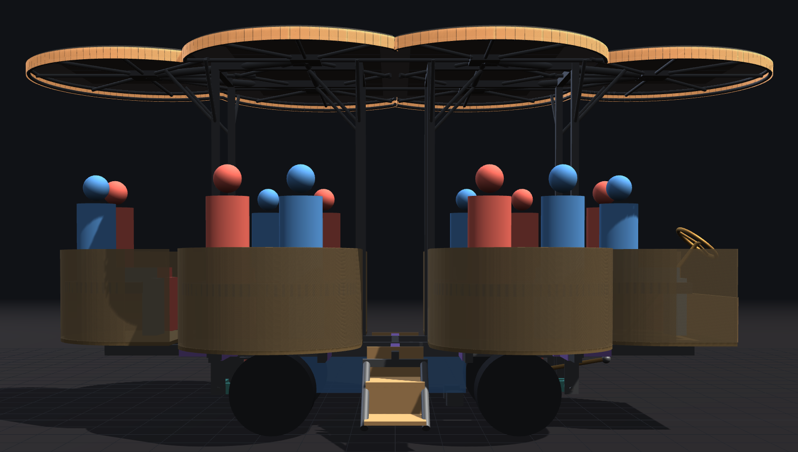
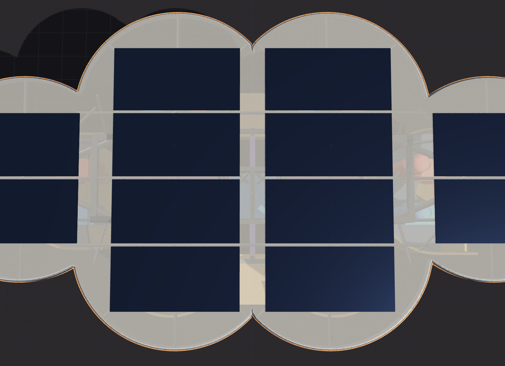

Plan of record · roof · rev 13 September 2026
The roof
A cloverleaf: six overlapping round leaves, one over each pod, read from the side as one lit rim floating above the riders. Built in aluminium as two halves that split at mid-length, each standing on four posts at the leaf valleys, with two flexible solar panels on every leaf.


What has been decided
- Shape. Six leaves, r = 32″, centred over the pods — the side leaves at (±24, ±21), the end leaves over the end pods — so the roof outline follows the pods rather than the rectangle of the chassis. It is one mass (or two) over the whole car, not a petal per pod: posts at the corners of the leaves, not the middle of each lily pad, for better sight lines. decided
- Height. Top of the rim at 102″ above the playa; with a 3″ rim the underside is at 99″, so a 6′ 2″ rider can stand on the 24″ deck under it, and seated eyes (~70″) have ~29″ of air above them. decided
- Structure and material. Aluminium tube, ~155 lb in total, as two halves split front/rear. Each half stands on four posts to the frame: the outer pair at the frame corners (±50, ±13), the inner pair flanking the walkway (±10, ±13), where they double as grab handles at the top of the stairs. Roof loads go into the chassis frame, never through the pods. Aluminium is right here because it is bolted, not welded, and saves about half the weight of steel; steel stays on everything that carries people. direction
- The lit rim. A 3″-deep fascia around the whole outline, lit from inside — the thing you see from across the playa. About 47 ft of edge with two rows of LEDs, ~1,700 in all. decided
- Solar. Twelve 100 W flexible panels (41 × 21″, ~4.5 lb each), two per leaf, ~1.2 kW nominal and ~54 lb; worth 4–6 kWh on a good day, which is two to three hours of generator. Treated as a bonus until measured on the playa. direction — if the panels are light enough
- Under the roof. Ottoman benches in the aisle: an 18″-wide padded storage bench between the pods, extra seats for four to six riders briefly, with storage inside. decided
- Transport. Six leaf pieces, each at most 64″ square, stacked flat on the trailer on top of the pods (the trailer view in the chassis model checks the stack height against the 13′ 6″ legal limit). decided
Key numbers
| Item | Value | Where it comes from |
|---|---|---|
| Leaves | 6 × r = 32″; side leaves at (±24, ±21), end leaves over the end pods; six pieces ≤ 64″ square | frame-3d roof section |
| Height | rim top 102″, underside 99″; 3″ rim | frame-3d |
| Posts | 8, at (±10, ±13) and (±50, ±13); two halves of four | frame-3d |
| Rim lighting | ~47 ft of fascia, two rows at 60/m, ~1,740 LEDs; ~210 W typical, ~780 W full white with the underside wash | frame-3d roof readout |
| Shade | ~111 ft² (rectangle 177, petals 109) | frame-3d roof readout |
| Solar | 12 × 41 × 21″ flex panels, ~100 W and ~4.5 lb each: ~1.2 kW nominal, ~54 lb | frame-3d |
| Weight | ~155 lb aluminium tube + ~54 lb panels ≈ 210 lb; ~30 lb per leaf piece with its two panels | frame-3d weights readout |
| Pieces for the trailer | four side leaves 56 × 53″, two end leaves 64 × 64″, plus two post frames and eight posts | frame-3d roof readout |
| Ottomans | two (46″ and 34″ long) × 18″ wide × 17″ high, ~25 lb each; six extra seats, ~9.6 ft³ of storage | frame-3d |
| Alternatives still in the model | rectangle on four posts and a mast (38″ overhang); petals, one per pod, on a mast (6″ overhang) | frame-3d roof style buttons |
Models and drawings
- model/frame-3d.html — the roof section: cloverleaf / rectangle / petals, height, leaf radius and positions, rim depth, post positions, ottomans; the readout compares aluminium weight, shade area, longest reach past a post, posts, panels and pieces for all three styles. simple · advanced
Open items
- The leaf structure itself — tube sections, how the rim fascia attaches and how the two halves join at mid-length — is drawn as a mass, not as members. Wind is the design driver: the model's rough estimate for a 40 mph gust on the ~111 ft² roof plane at ±10° is ±230 lb up or down, ~29 lb per post; a real calculation is still to do.
- Panel weight and mounting: 12 flex panels are in the plan only if they come in near 4.5 lb each; confirm before the tube sizes are chosen.
- What the rim looks like from the side: 2–4″ of lit fascia was the visual brief; 3″ is drawn. Selina's sketches 3, 5, 7 and 9 are the references for the rim and for small lampshades on the pods.
- The outer posts at (±50, ±13) stand on the side rails right where the side pods' legs end: the model reports them ~8″ inside the side-pod outline along the car, so the pod leg post and the roof post have to share that corner (notch the pod floor, or move the posts).
- Pole-framed side entrances as grab handles are an option not yet drawn; the inner roof posts do that job at the stairs for now.
How we got here
The first pod concept had a flat disc roof on a central mast (the rendering on the home page); the notebook's core-shapes study also put a rectangular roof on four posts and a mast on the pods design. Petals — one small roof per pod — were modelled next, then set aside for a single cloverleaf mass, which keeps the pod outline but reads as one shape and puts the posts where they do not block the view. All three are still selectable in the chassis model so they can be compared. The roof material decision (aluminium, bolted) and the reasons are in the structure section of loveseat.md; the ottoman bench and the side-entrance idea came with the cloverleaf. See the explorations page for the rest.